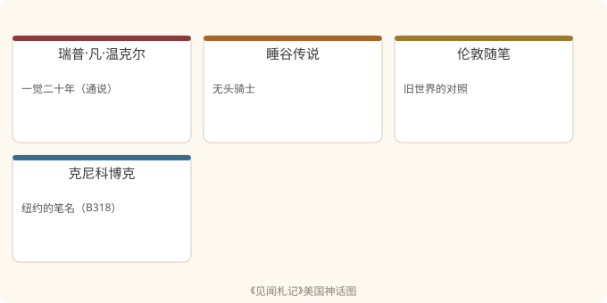

见闻札记
一、基本信息
| 作者 | 华盛顿·欧文 |
|---|---|
| 成书/出版 | 1819—1820年（作者页 B318 口径：The Sketch Book (1819–20)） Washington Irving — Encyclopaedia Britannica（百科全书） |
| 国别/地区 | 美国 |
| 时代 | 近代 · 19世纪初 |
| 体裁 | 散文随笔集 |
| 语言 | 英语 |

《见闻札记》美国神话图（主题·结构图）
二、创作背景
作者页（B318）：欧文'first American author to achieve international fame'（首位获得国际声誉的美国作家——B318）；The Sketch Book (1819–20)——含'Rip Van Winkle'与'The Legend of Sleepy Hollow'（B318）。
《纽约外史》（A History of New York, 1809，署名 Diedrich Knickerbocker——B318）。
三、内容脉络
'瑞普·凡·温克尔'：山中一觉二十年（通说待核）。
'睡谷传说'：无头骑士（通说待核）。
英国随笔（通说待核）。
四、主要人物表
| 人物 | 身份 | 说明 |
|---|---|---|
| 瑞普·凡·温克尔 | 懒汉 | （通说待核） |
| 伊卡博德·克莱恩 | 教师 | （通说待核） |
五、主题与艺术特点
- 美国'神话'的发明（通说待核）。
- 新旧大陆的对照（通说待核）。
- '克尼科博克'幽默（通说待核）。
六、影响与评论
- Britannica：'first American author to achieve international fame'（B318）。
Washington Irving — Encyclopaedia Britannica（百科全书） - Britannica：The Sketch Book 含'瑞普'与'睡谷'（B318）。
Washington Irving — Encyclopaedia Britannica（百科全书）
七、阅读建议
难点
- 荷马式……不：荷兰移民文化背景。
- '幽默'的古典笔调。
- 《见闻札记》（人民文学出版社/上海译文版本，通说待核）。
- 英文原版（公有领域）。
美国文学起点之一。
八、待核实
- 1819—20连载（John Murray说）核对。
- 瑞普/伊卡博德人名核对。
- '睡谷'地名（Sleepy Hollow）待核。
本页主要来源
相关作品：哈克贝利·费恩历险记简·爱愤怒的葡萄